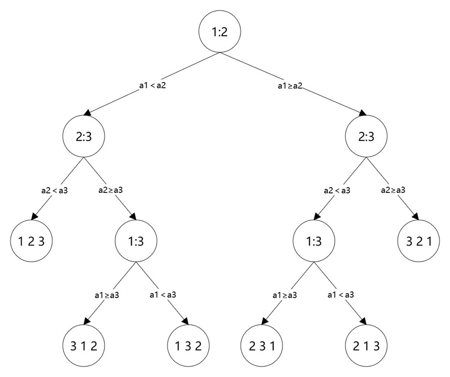

© 2022 《算法（第四版）》C# 题解 | Provided By 沈星繁
搜索解答
目前已完成到 3.2
2.2.13
上次更新：2022-02-18
发现了题解错误/代码缺陷/排版问题？请点这里：如何：提交反馈 。
解答
假设对三个数进行排序，
这三个数是：35，10，17
三个数排序的决策树如下，
结点代表比较对应位置上的数。

对于 35,10,17 来说，路径遵循右、左、左，最后得到的结果就是 2 3 1（10,17,35）。
我们可以发现决策树上的每一个叶子节点都代表一种排列顺序，对于 N 个数，叶子节点就有 个
根据二叉树的性质，高度为 的二叉树最多有 个叶子节点
那么，对于 个数，决策树的高度 的最小值可以通过下面这个式子得出来
因此可以得到决策树高度 的最小值是
接下来我们来计算平均路径长度
我们令函数 代表有 个叶子节点的平衡决策树的所有路径长度之和
上例中
由于平衡决策树的性质，
（加上 的原因：左右子树的高度比整个树的高度小 ，因此每条路径的长度都必须加 ，总共多加了 次）
因此
现在令
由于每次排序时我们只经过某一条路径（上例中我们只经过了右、左、左这条路径）
而且每种路径的出现概率相等
因此平均比较次数应该为
证明完毕